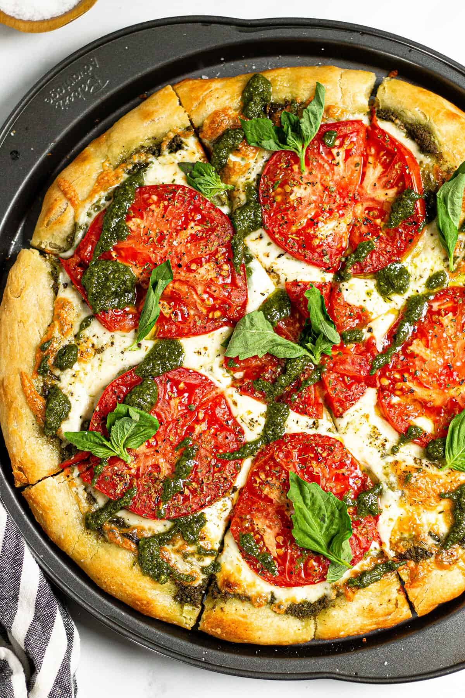

Pesto Pizza

A great alternative to pizza, 20 minutes to prep and cook, yields 6 servings
Ingrediants
- 1 12 inch prebaked pizza crust
- 1/2 cup Pesto
- 1 ripe tomato, chopped
- 1/2 cup green bell pepper, chopped
- 1 (2 ounce) can chopped black olives, drained
- 1/2 small red onion, chopped
- 1 (4 ounce) can artichoke hearts, drained and sliced
- 1 cup crumbled feta cheese
Steps
- Preheat oven to 450 degrees F (230 degrees C)
- Spread pesto on pizza crust. Top with tomatoes, bell peppers, olives, red onions, artichoke hearts and feta cheese.
- Bake for 8 to 10 minutes, or until cheese is melted and browned.